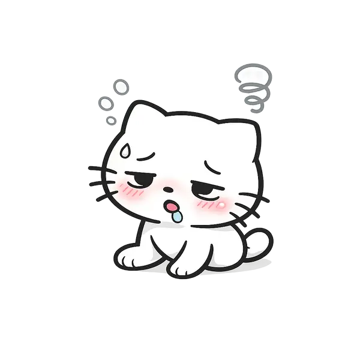

Why MoodFlow is more than a basic mood tracker
Many mood tracking apps stop at one-tap check-ins. MoodFlow is designed to help people express what they actually feel, keep a richer emotional record, and notice patterns that would otherwise stay hidden.
- Daily mood tracking that feels visual instead of clinical.
- Richer emotion tags for calm, grateful, anxious, relieved, and overwhelmed.
- Charts and summaries that make emotional patterns easier to spot.
